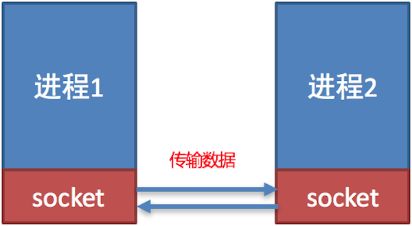

<!DOCTYPE lake>
<h3 data-lake-id="xJCmN" data-lake-index-type="2" id="xJCmN"><span data-lake-id="u9f7beda1" id="u9f7beda1" style="color: rgba(0, 0, 0, 0.87)">问题思考</span></h3><p data-lake-id="ue9880643" id="ue9880643"><span data-lake-id="ubff80f84" id="ubff80f84" style="color: rgba(0, 0, 0, 0.87)">到目前为止我们学习了 ip 地址和端口号，为了能够找到对应设备我们需要使用 ip 地址，为了区别某个端口的应用程序接收数据我们需要使用端口号，那么通信数据是如何完成传输的呢？</span></p><blockquote data-lake-id="u4bda0bdd" id="u4bda0bdd"><p data-lake-id="ufaef5d25" id="ufaef5d25"><span data-lake-id="ub6d84a52" id="ub6d84a52" style="color: rgba(0, 0, 0, 0.87)">使用 </span><strong><span data-lake-id="u4e377c86" id="u4e377c86" style="color: rgba(0, 0, 0, 0.87)">socket</span></strong><span data-lake-id="u6d50e496" id="u6d50e496" style="color: rgba(0, 0, 0, 0.87)"> 来完成</span></p></blockquote><h3 data-lake-id="sql3S" data-lake-index-type="2" id="sql3S"><span data-lake-id="u32f5df85" id="u32f5df85" style="color: rgba(0, 0, 0, 0.87)">socket 的概念</span></h3><p data-lake-id="u932dad3c" id="u932dad3c"><span data-lake-id="u0b56d725" id="u0b56d725" style="color: rgba(0, 0, 0, 0.87)">socket (简称 套接字) 是</span><strong><span data-lake-id="u013a3e38" id="u013a3e38" style="color: rgba(0, 0, 0, 0.87)">进程之间通信一个工具</span></strong><span data-lake-id="u4a0496b9" id="u4a0496b9" style="color: rgba(0, 0, 0, 0.87)">，好比现实生活中的</span><strong><span data-lake-id="u4e9daf36" id="u4e9daf36" style="color: rgba(0, 0, 0, 0.87)">插座</span></strong><span data-lake-id="u2cd92851" id="u2cd92851" style="color: rgba(0, 0, 0, 0.87)">，所有的家用电器要想工作都是基于插座进行，</span><strong><span data-lake-id="u4a5fd23b" id="u4a5fd23b" style="color: rgba(0, 0, 0, 0.87)">进程之间想要进行网络通信需要基于这个 socket</span></strong><span data-lake-id="u2166d73d" id="u2166d73d" style="color: rgba(0, 0, 0, 0.87)">。</span></p><p data-lake-id="u26942490" id="u26942490"></p><h3 data-lake-id="q36e5" data-lake-index-type="2" id="q36e5"><span data-lake-id="u01e3c8b3" id="u01e3c8b3" style="color: rgba(0, 0, 0, 0.87)">socket 的作用</span></h3><p data-lake-id="u7102b857" id="u7102b857"><span data-lake-id="uf5ee94b0" id="uf5ee94b0" style="color: rgba(0, 0, 0, 0.87)">负责</span><strong><span data-lake-id="ub1f91c52" id="ub1f91c52" style="color: rgba(0, 0, 0, 0.87)">进程之间的网络数据传输</span></strong><span data-lake-id="u2ea3dbc4" id="u2ea3dbc4" style="color: rgba(0, 0, 0, 0.87)">，好比数据的搬运工。</span></p><h3 data-lake-id="g1ddg" data-lake-index-type="2" id="g1ddg"><span data-lake-id="u761b742a" id="u761b742a" style="color: rgba(0, 0, 0, 0.87)">socket 使用场景</span></h3><p data-lake-id="ubddddbdc" id="ubddddbdc"><span data-lake-id="ub9a611aa" id="ub9a611aa" style="color: rgba(0, 0, 0, 0.87)">不夸张的说，只要跟</span><strong><span data-lake-id="u69e1e7ac" id="u69e1e7ac" style="color: rgba(0, 0, 0, 0.87)">网络相关的应用程序或者软件都使用到了 socket</span></strong><strong><span data-lake-id="u9a626128" id="u9a626128" style="color: rgba(0, 0, 0, 0.87)"> </span></strong><span data-lake-id="ud54785ff" id="ud54785ff" style="color: rgba(0, 0, 0, 0.87)">。</span></p><p data-lake-id="u987159c5" id="u987159c5"></p><h3 data-lake-id="qKM7v" data-lake-index-type="2" id="qKM7v"><span data-lake-id="u342bc0c6" id="u342bc0c6" style="color: rgba(0, 0, 0, 0.87)">小结</span></h3><p data-lake-id="ua5ec46af" id="ua5ec46af"><span data-lake-id="ud61a54ea" id="ud61a54ea" style="color: rgba(0, 0, 0, 0.87)">进程之间</span><strong><span data-lake-id="u53081829" id="u53081829" style="color: rgba(0, 0, 0, 0.87)">网络数据的传输</span></strong><span data-lake-id="uc283ad77" id="uc283ad77" style="color: rgba(0, 0, 0, 0.87)">可以通过 </span><strong><span data-lake-id="ua43d3981" id="ua43d3981" style="color: rgba(0, 0, 0, 0.87)">socket</span></strong><span data-lake-id="udf7a7223" id="udf7a7223" style="color: rgba(0, 0, 0, 0.87)"> 来完成，</span><strong><span data-lake-id="u0b204916" id="u0b204916" style="color: rgba(0, 0, 0, 0.87)">socket 就是进程间网络数据通信的工具。</span></strong></p>